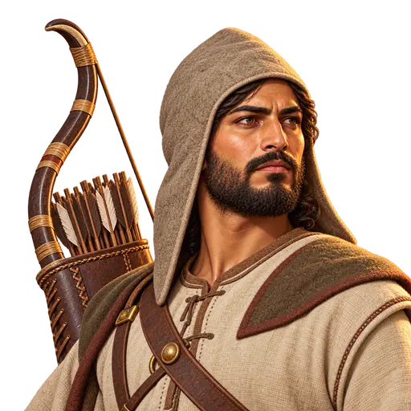
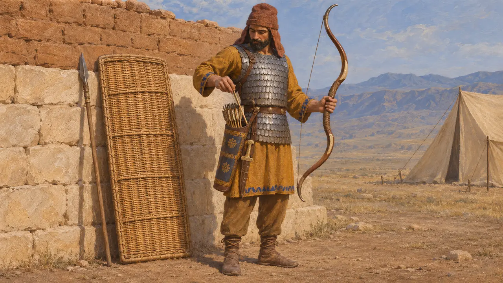
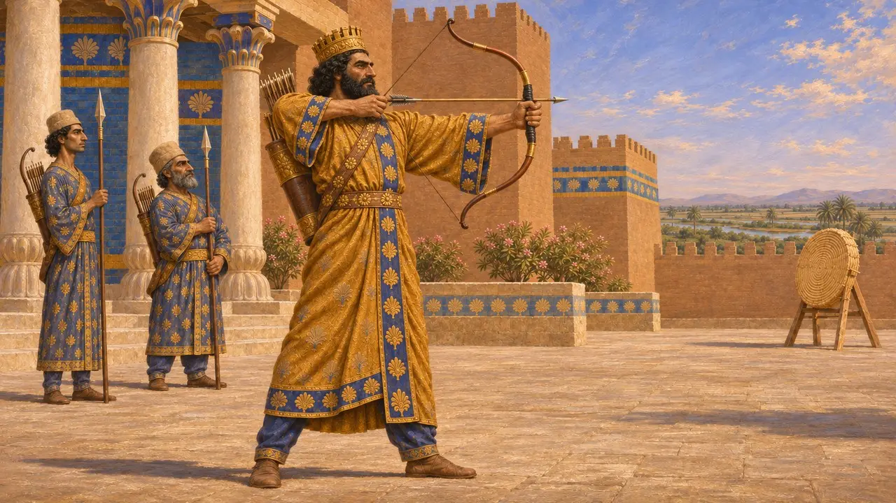
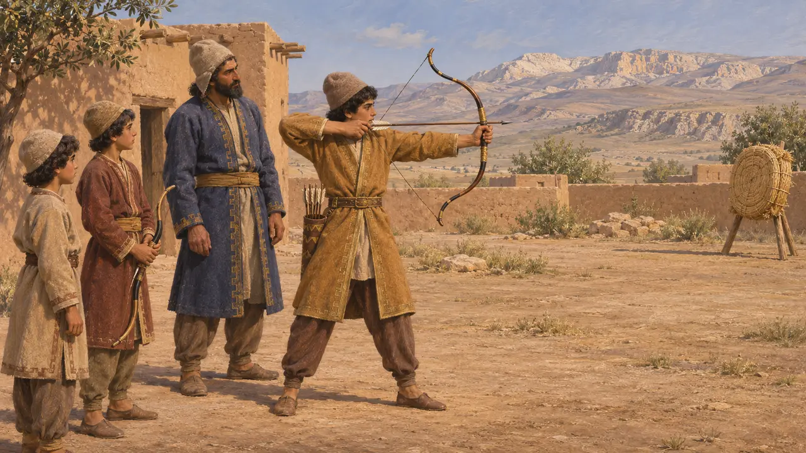
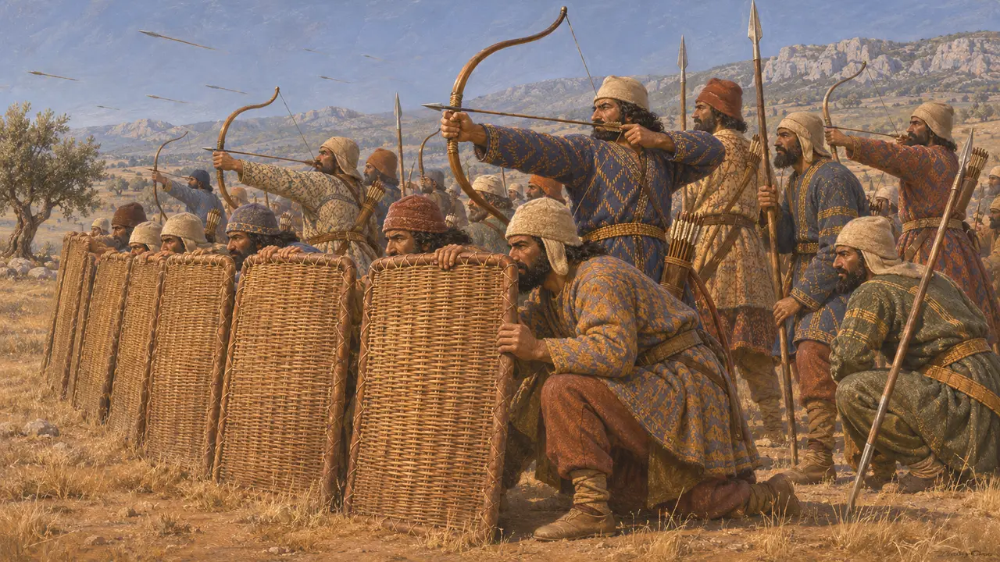
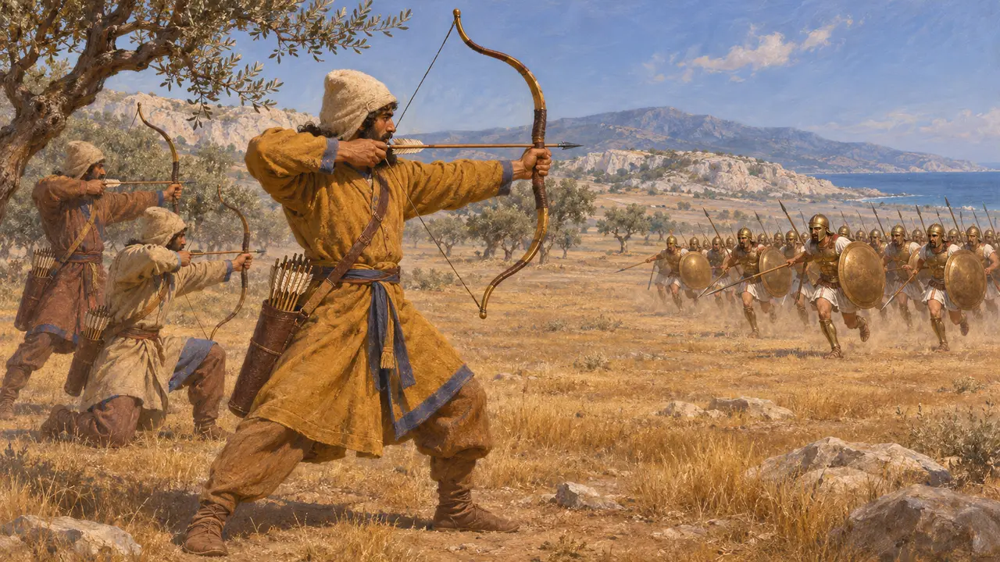
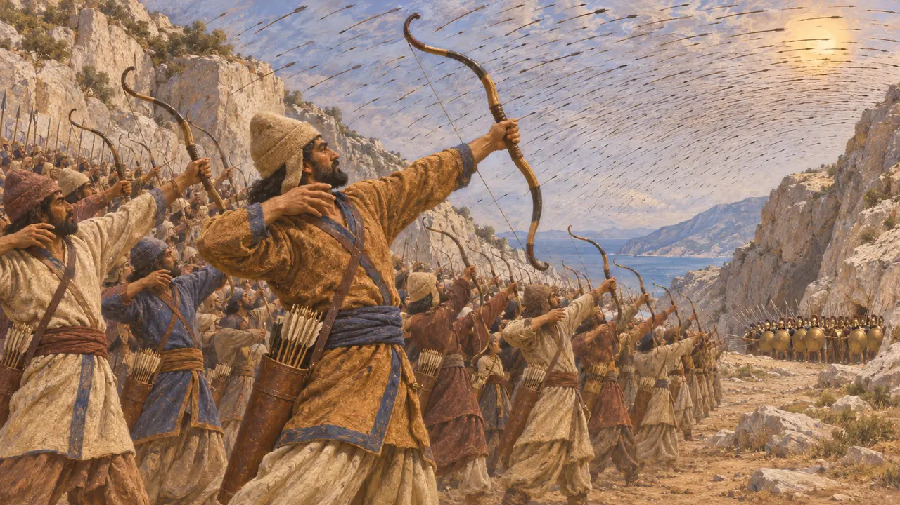

波斯弓箭手
阿契美尼德波斯军队的持弓步兵，约公元前550-前479年
弓是波斯步兵的主要武器，希腊作家描述波斯军队以密集的箭雨开启战斗。希罗多德笔下的波斯步兵手持大弓、芦苇箭和柳条盾，波斯国王在艺术与铭文中也以弓手形象示人。弓使帝国在面对众多敌人时得心应手，但在与希腊重装步兵近身搏杀时却力有不逮。
游戏中： 游戏将弓箭手设为独立兵种，在长矛兵身后射击劫掠者，近战中很快阵亡。这是一种简化：许多波斯步兵同时携带矛与弓，拆分为两个兵种是游戏的设定。

弓、箭囊与柳条盾
古代记述希罗多德描述薛西斯军中的波斯部队头戴软毛毡帽，身穿有袖长衣、长裤和铁鳞甲。他们手持柳条盾、短矛、大弓和芦苇箭，右大腿旁悬挂一柄短剑。他补充说，这套装束源自米底，军中的米底人也是同样的装备。
Herodotus 7.61-62

身为弓手的国王
见于史载在纳克歇-洛斯塔姆陵墓的铭文中，大流士将“无论步行还是骑马皆为优秀弓手”列为自己的才能之一。苏萨出土的琉璃砖饰带描绘了成排的卫士，手持长矛，肩挎弓与箭袋。自大流士统治后期起，王家金币和银币上便铸有一位头戴王冠、手持弓的人像。
DNb; glazed-brick archer frieze from Susa; royal archer coinage

自幼习射
古代记述希罗多德记载，波斯男孩从5岁到20岁要学三件事：骑马、射箭和说真话。斯特拉波对波斯人的教育也有类似的、年代更晚的描述。两者都是希腊局外人的概述，但都认为射箭是波斯人训练青年男子的核心。
Herodotus 1.136; Strabo 15.3.18

盾墙与箭雨
争夺中希罗多德记载，普拉提亚之战中波斯人将柳条盾立成屏障，躲在其后放箭。许多现代史学家据此复原出一种阵型：持盾者在前，弓箭手列于后排，有时称之为“斯帕拉巴拉”。也有学者提醒，这一名称以及如此整齐的分工都是现代人的复原，大多数波斯步兵很可能同时携带长矛和弓。
Herodotus 9.61-62; P. Briant, From Cyrus to Alexander, 2002

对抗重装步兵
古代记述希罗多德记载，雅典人在马拉松以跑步前进，波斯人认为他们没有骑兵和弓箭手就发起进攻，简直是疯了。现代史家常将这次奔跑解读为快速穿越箭矢射程的手段。在普拉提亚，他认为波斯人勇气不输对手，但面对重装步兵时缺乏铠甲与技艺。在温泉关，波斯人向把守山间小道的福基斯人射出了大量箭矢。
Herodotus 6.112; Herodotus 7.218; Herodotus 9.62-63

遮天蔽日的箭矢
后世传说希罗多德记载，一名特拉基斯人警告说，波斯人的箭矢将遮天蔽日，斯巴达人狄耶涅凯斯答道，那么他们便可在阴凉中作战。这是一则颂扬勇气的希腊故事，原话无从查证，但它表明了波斯箭术在希腊人中的声名。
Herodotus 7.226
来源
- Herodotus, Histories 7.61-62
- Herodotus, Histories 1.136
- Herodotus, Histories 9.61-63
- DNb (tomb inscription of Darius, Naqsh-e Rostam)
- P. Briant, From Cyrus to Alexander, 2002
- Strabo, Geography 15.3.18